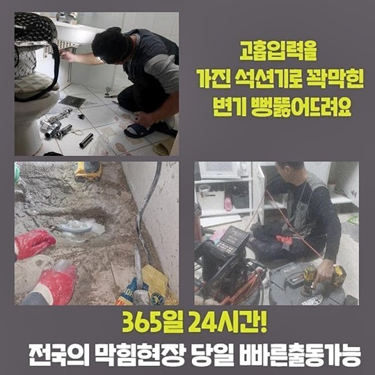
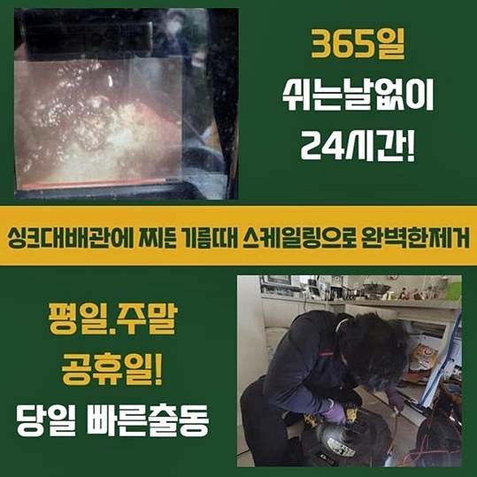
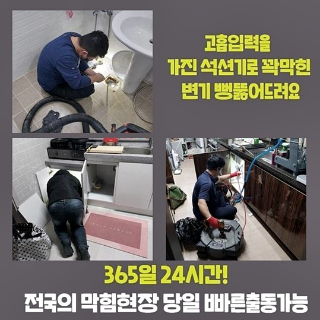
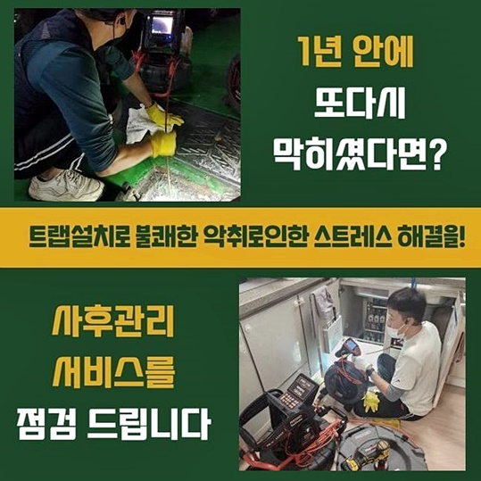
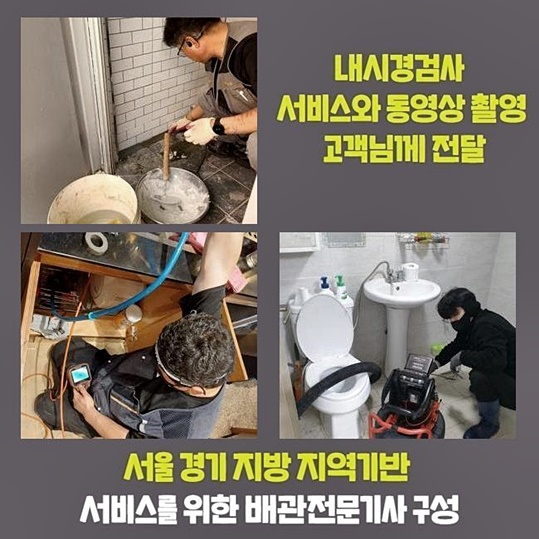

🏠 부평구 부평동싱크대배수구역류 일신동 하수관고압세척 누수탐지
용인 싱크대막힘 전문 시공 후기

📋 작업 개요
- 위치: 용인
- 서비스 유형: 싱크대막힘, 하수구막힘, 배관막힘, 누수수리, 역류해결, 뚫는업체, 배관청소, 고압세척
- 작업 일시: 2024. 8. 14. 17:31
- 업체명: 하수구수사대 (010-5615-2118)
🔍 문제 상황
부평구 부평동싱크대배수구역류 일신동 하수관고압세척 누수탐지
하수관이 막혔을 경우 속히 이동하여 막힌 하수구 설비와 마음까지 뻥 뚫어드리는 전문적 조치를 보여드릴게요
정상적인 생활하수가 졸졸 내려가던 하수통로가 불현듯 중단이 빚어져서 다양한 클리너를 이용해서 관통하려 했으나 크게 달라지는 바가 없었나요?
그렇다면 걱정마시고 하수전문가인 저희에게 SOS를 요청해 주신다면 속 답답한 게 없도록 물길을 확 열어드리니 언제라도 전화주시면 됩니다
가정집에서 하수구가 트러블이 생긴다면 오염원이 자리했을 상황이 대다수입니다
오염물질이 과량으로 축적되지는 않은 수준이라면 고객님께서도 이용하실 수 있는 전용 클리너거나 비닐을 씌워 압력을 주는 등 당장 수행가능한 솔루션으로도 물길이 다시 열릴 수도 있어요
허나 이물질이 잔뜩 끼어있다거나 부패해서 상당한 크기로 확장된 현황이라면 아무리 노력해 봐도 그리 성공확률이 높진 않아요
심상치않은 막힘이라고 판단될 시 전문서비스를 요청해서 시설을 보완하셔야 할 겁니다
공동주택의 일원이셨던 고객님께서 아무 문제없던 주방 싱크대 물이 안 빠져서 빠르게 와주면 좋겠다는 의뢰를 해 주셔서 출장을 가게 되었어요
하수관의 마비가 생기면 거듭 막힘이 일어날 가능성이 있으니 주의해야 합니다
이상물질이 빠져나가지 못하여 막혀버린 경우 시원하게 처리를 해주지 않는다면 이물질이 계속 쌓이며 하수관을 막게 되는 겁니다
아파트에서 촉발되는 작업건들을 놓고 보면 까다롭다 싶은 작업은 미약한 수준이므로 부담을 가지진 않아요
모든 건을 평등하게 보고 생각보다 까다로운 문제가 생겨버린 현장일 수 있으므로 누락없이 만반의 준비를 해요

🔎 원인 분석
💡 전문가 진단: 정밀 진단 장비를 사용하여 슬러지의 고착 여부를 판명하고 타격/세척 작업을 실시했습니다.
원활한 하수구작업을 이어가려면 흡입하는 석션기와 촬영기기 샤프트와 같은 다수의 장비가 동원되어야 하는데요
뛰어난 효능을 자랑하는 장치들을 두루 갖춘 후에 출동을 해드리고 있어요
석션장치는 보통의 청소기와 거의 동일하다고 보시면 되는데 물기에도 강한 흡입력이 좋은 장비인데요
막힘이 중중하지 않으면 석션기만으로도 가볍게 흡입을 몇 차례 거치면 고인 물이 빠져나가는 작업지들도 제법 있네요
이런 초기 케이스들은 다소 드물다고 볼 수 있고 여러 장치들을 써야하는 때가 훨씬 우세하긴 해요
석션의 가동으로 노폐물의 흡입을 하는 동시에 안쪽에 찰랑대는 하수까지 남김 없이 끌어올릴 수 있는데 이런 하수를 빼줘야만 배관용 촬영장치를 유입시켜 관측할 수 있어요
문제가 일어난 부분을 안내받아서 장치와 함께 자리를 잡고 문제점을 빠르게 살펴보게 됩니다
물도 잔뜩 차올라있고 하부장도 살펴봤더니 심하게 오염된 하수가 치솟는 상황이 있었나 봅니다
물을 조금씩 내보낸다면 느리지만 내려가기는 하나 다량을 내려 보낼 때 역류현상이 관측된다면 끈적한 이물질들이 다량 머무른다는 뜻입니다
이렇게 고여있는 슬러지가 물이 고이고 압력이 차다가 밑이 아닌 위로 터져올라와요
첫 순위로 석션작업을 택하여 시작해 보았더니 고형화된 물질은 없었고 잔수만 가득 모였어요
역행은 쭉 이어지는 상태였고 여전히 물이 옴짝달싹 하지 않았어요
시야를 가리는 물기를 소거했으니 내부로 진입하여 동기를 추적하기 위해서 관로촬영 장비를 삽입해 보았습니다

🔧 작업 과정
안으로 밀어 넣은 지 얼마 안된 시점에 문제점을 파악하게 됐는데요
한 덩어리로 말라붙은 슬러지가 사이즈가 막대한 수준이라 더 밑의 상황은 확인하기가 어렵더군요
오랜시간 방치되어 왔던 막힘상황이라 물이 쉬이 빠져 나갈리가 없는 암담한 상황이었던 겁니다
물이 다시 제대로 배출되게 하려면 오염물질을 어떻게든 제거해야 했습니다
딱딱하게 돌처럼 굳어버린 진흙과 같은 슬러지덩이라면 작은 입자로 부숴서 소거를 시키기 때문에 빠르게 돌아가면서 긁어주는 샤프트로 떡하니 자리를 차지하는 슬러지를 소규모로 분해를 해줬죠
샤프트 기기의 헤드에 장착된 노커가 돌아가면서 세세하게 분리가 되도록 지속적으로 스케일링을 해주었어요
파워가 강한 샤프트지만 카메라로 지속적으로 체크업을 하면서 수행하니 배관의 벽체가 부서질 일은 없어요
지식이 미미한 사람이 아니고 전문공이 유연하게 프로세스를 이어가니 걱정 붙들어 매셔도 돼요!
다수의 사건을 완수했고 관련 지식이 많기 때문에 해당 현장의 난도가 높은 편이라도 걱정 없이 조치를 취하고 있어요
사전조사를 충분히 한 뒤에 가장 적합한 방식을 차용하고 추후 하자 없는 완벽시공에 매 현장마다 소신을 갖고 정진합니다!
작업의 중간과 끝에는 늘상 막힘을 뚫어준 파이프 내부가 다친 곳은 없는지 두루 살펴봐 드립니다
웬만큼 돌린 이후에 샤프트를 다 쓰고 나면 그 다음은 석션을 넣어 적당한 크기로 썰린 노폐물을 끌어올려주며 마감 짓습니다
흡입 단계를 거치려고 들어가 있던 샤프트를 바깥으로 빼보니 엉망으로 냄새가 어마무시한 이물질들이 상당량 투출된 게 보였네요
계속 아래로 내려가며 슬러지를 조각낸 다음 흡수시키는 절차를 반복적으로 정화작업을 거치다 보면 배관의 고장난 상황이 자연스럽게 해결됩니다
이러한 기름이 부패한 채로 물성이 변하여 악취도 엄청난 상황이었죠
속에 있는 오염물들을 없애는 데에 집중하다보면 자연히 악취에 대한 고민도 해소되어 뿌듯함을 느끼게 됩니다
기름기 어린 이물질이 남아 있지 않도록 내부가 쾌적할 정도로 배관 환경을 정비해 드립니다
다량의 노폐물들이 바깥으로 빼내졌으니 아까 청소를 해주기 전과 비교하면 거의 180도 변했네요
막힌 지점들도 대부분 분해해서 물길을 내주었으니 내부의 오염 물질들을 마저 흡수를 시켜줘서 피니시 업무만 해주면 돼요
최종 체크를 위해 내시경으로 들여다 보았더니 숨 쉴 구멍도 없이 막힌 통로가 시원스럽게 확장된 것을 볼 수 있었고 뿌듯함이 느껴졌네요
스트레스가 많으시던 고객님도 모니터링도 하고 설명을 들으시곤 놀라움을 금치 못하셨네요!


✅ 작업 완료
재발이 생기지 않도록 20분에 이르기 까지 정화 작업을 시행했더니 파이프라인의 곳곳은 충분히 안심하실 수 있도록 개선된 모습이 됐네요
싱크대 수도꼭지에서 물을 켜서 배수검사를 걸어주게 되었는데 충분한 성능을 발휘하며 통수과정이 스무스하게 진행됐어요
소량만 내려보내지 않고 동시에 배수를 시킬 때도 문제가 없는지 검사를 역시나 거쳐주었습니다
묵직한 수준으로 물을 폐수했음에도 불구하고 전혀 거꾸로 샘솟는 현상이 없이 주변 시설도 보송보송 유지됐네요
작업을 하려고 펼쳐놓은 기계를 정비해 두고 오염물이 튀었을 주변부까지 물기 하나 없이 정화하고 주의사항도 전달을 해드렸습니다!
하수구가 불현듯 중단되어 어떻게 해야할지 막막하시다면 의뢰만 쉽게 맡겨주시면 작업장으로 빠르게 이동하여 막힘 없는 작업 능력을 기반으로 빛나는 배관을 되찾게 해드릴게요!



⚠️ 베란다 누수 및 방수 관리 방법
- ✅ 비가 많이 올 때 창틀 주변이나 아래층 천장에 얼룩이 생기는지 정기적으로 확인해 보세요.
- ✅ 우수관 주변 실리콘 마감이 들뜨거나 깨진 틈새가 있는지 손상 여부를 수시로 체크하세요.
- ✅ 베란다 바닥 타일의 줄눈(메지)이 소실되면 그 틈으로 물이 침투하여 누수가 유발됩니다.
- ✅ 누수 의심 증상 발견 시 방치하면 아래층 손실이 커지므로 즉시 전문가의 진단을 받으십시오.
💡 핵심 정리
- 확실한 장비 작업(내시경 점검 및 샤프트 스케일링)으로 원인을 뿌리 뽑습니다.
- 작업 후 1년 이내에 동일한 부위 재발 시 100% 무상 A/S 서비스를 보장합니다.
- 서울 · 경기 · 인천 전 지역에 24시간 언제든 긴급 출동할 수 있도록 항시 대기 중입니다.
❓ 자주 묻는 질문 (FAQ)
🚨 용인 싱크대막힘 문제로 고민이신가요?
정확한 원인 진단과 확실한 시공으로 재발 없는 해결을 약속드립니다.
24시간 긴급 출동 | 서울 · 경기 · 인천 전지역 | 1년 내 재발 시 무상 A/S